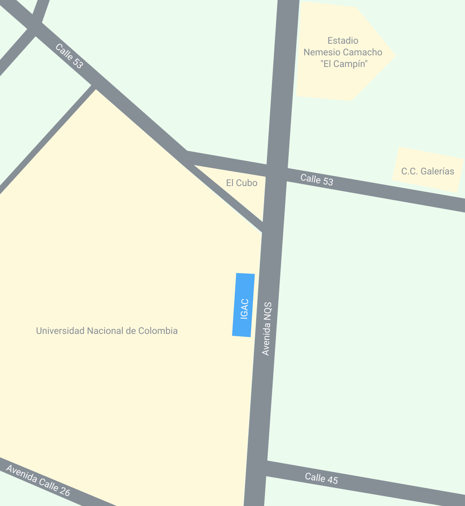

El IGAC es la entidad encargada de producir el mapa oficial y la cartografía básica de Colombia, elaborar el catastro nacional de la propiedad inmueble, realizar el inventario de las características de los suelos, adelantar investigaciones geográficas como apoyo al desarrollo territorial, formar profesionales en tecnologías de información geográfica y coordinar la Infraestructura Colombiana de Datos Espaciales.
La entrada principal del instituto se encuentra sobre la avenida NQS, en Bogotá.
